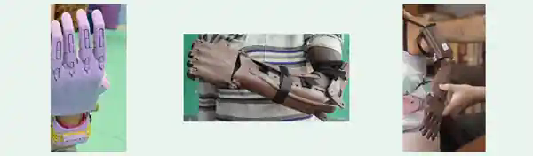

Articulación y movimiento
Según el caso se revisa si hay movimiento útil en muñeca, codo u hombro. Esta información necesita evaluación individual.
Actualmente ECOBIONICA recibe solicitudes únicamente para prótesis y ayudas mecánicas de miembro superior. Conoce las opciones de muñeca, codo y hombro, descarga los formatos e inicia el contacto con nuestra Fundación.

Modelos con activación mediante muñeca, codo o hombro, según la evaluación técnica.
Fotografías de los modelos de referencia; la elección y adaptación dependen de cada persona.En esta etapa, el programa atiende exclusivamente casos de miembro superior, incluyendo algunas diferencias congénitas o amputaciones. La viabilidad y la selección del tipo de dispositivo dependen de una valoración especializada, no de la preferencia del solicitante.
Según el caso se revisa si hay movimiento útil en muñeca, codo u hombro. Esta información necesita evaluación individual.
Para amputaciones recientes, la referencia técnica preliminar sugiere esperar alrededor de ocho meses antes de una adaptación. Se puede consultar antes, sin sustituir criterio profesional.
En una etapa privada y autorizada pueden solicitarse medidas, fotos de distintos ángulos, vídeo de movilidad y entrevista de presentación.
Estas alternativas aprovechan el movimiento de una articulación conservada para activar un mecanismo de agarre. Al moverla, unos hilos transmiten la tensión para cerrar los dedos; al liberar el movimiento, elementos elásticos facilitan la apertura. El modelo adecuado se determina mediante evaluación especializada.
Para quién: personas que conservan movilidad funcional de la muñeca, pero presentan ausencia de dedos o parte de la mano.
Cómo funciona: la flexión de la muñeca acciona un sistema mecánico de cierre y apertura de los dedos, que puede facilitar agarres sencillos.
Para quién: personas que conservan el codo y su movilidad, pero requieren apoyo de mano y antebrazo.
Cómo funciona: al mover el codo, se transmite fuerza al mecanismo que cierra los dedos de la mano mecánica.
Para quién: personas sin un codo funcional para accionar el mecanismo, que conservan movimiento adecuado del hombro.
Cómo funciona: el movimiento del hombro se utiliza para activar el cierre de los dedos protésicos.
Formatos propios de la Fundación Ecopiensa Evolution, preparados para orientación, contacto y futura evaluación. Descarga los PDF; no son certificados médicos ni sustituyen las indicaciones que se den al aprobar cada caso.
Requisitos básicos, pasos generales y recomendaciones para solicitantes y familias.
Descargar guía PDFFicha imprimible para preparar datos de contacto, autorizaciones y una solicitud formal bajo control del titular.
Descargar formulario PDFLista privada para organizar las indicaciones de medición y material visual cuando un profesional lo solicite.
Descargar ficha PDFCompleta el formulario oficial ECOBIONICA. Los datos de contacto quedarán organizados en el registro de respuestas gestionado por la Fundación Ecopiensa Evolution. Actualmente atendemos únicamente solicitudes de miembro superior.
Al pulsar Enviar al final del formulario de Google se registra tu pre-solicitud. ECOBIONICA podrá contactarte para informarte sobre la orientación y evaluación posterior. La recepción no garantiza la fabricación o entrega de un dispositivo.
En esta etapa no adjuntes fotografías, vídeos, medidas corporales, historias clínicas ni diagnósticos. Si el caso avanza, la Fundación explicará los permisos y el canal privado apropiado para la evaluación técnica.
ECOBIONICA coordina la orientación con un enfoque responsable de inclusión y seguimiento. La participación de aliados técnicos especializados forma parte del proceso de evaluación y producción.
La persona expresa interés por los canales institucionales.
Se explican condiciones y, si corresponde, consentimientos.
Un equipo especializado revisa documentación y viabilidad técnica.
Si el caso resulta viable, se coordinan producción, logística, entrega y seguimiento.
No. Cada solicitud está sujeta a valoración, condiciones técnicas, disponibilidad de recursos y organización logística. Iniciar el contacto no garantiza un dispositivo.
Personas y familias que requieren apoyo para diferencias o amputaciones de miembro superior. Actualmente esta ruta no está habilitada para prótesis de pierna o pie. Cada caso requiere evaluación de movilidad y condiciones técnicas.
No las cargues en esta web ni las envíes con la pre-solicitud. Conserva esos archivos en privado; el equipo del programa te indicará qué es necesario y cómo compartirlo, una vez estén resueltos los permisos correspondientes.
No. La orientación inicial es gratuita. Cualquier detalle de fabricación, transporte, aduanas o apoyos se analizará y comunicará antes de asumir compromisos.
El contacto y las autorizaciones deben gestionarse mediante madre, padre o representante legal, junto con los procedimientos de protección de datos aplicables.